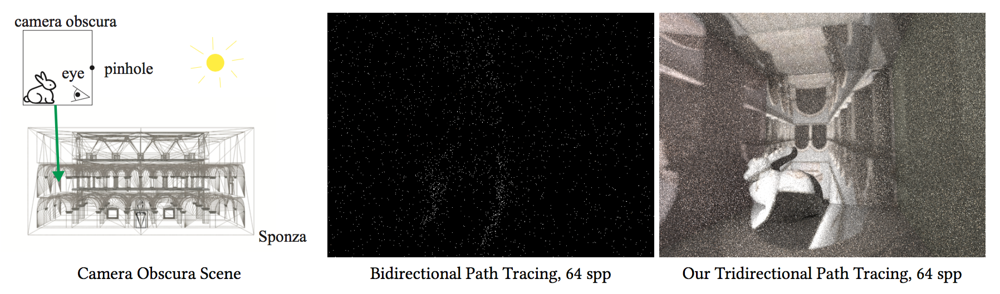

Luke Anderson, MIT CSAIL
Tzu-Mao Li, MIT CSAIL
Jaakko Lehtinen, Aalto University and NVIDIA
Frédo Durand, MIT CSAIL and Inria, Université Côte d’Azur
Implementing Monte Carlo integration requires significant domain expertise. While simple samplers, such as unidirectional path tracing, are relatively forgiving, more complex algorithms, such as bidirectional path tracing or Metropolis methods, are notoriously difficult to implement correctly. We propose Aether, an embedded domain specific language for Monte Carlo integration, which offers primitives for writing concise and correct-by-construction sampling and probability code. The user is tasked with writing sampling code, while our compiler automatically generates the code necessary for evaluating PDFs as well as the book keeping and combination of multiple sampling strategies. Our language focuses on ease of implementation for rapid exploration, at the cost of run time performance. We demonstrate the effectiveness of the language by implementing several challenging rendering algorithms as well as a new algorithm, which would otherwise be prohibitively difficult.
The code for Aether is available here.
A detailed overview of Aether and its usage is available here.
Equation 5 should read:
`p(\omega) = \sqrt{| \det J^\text{T} J |}^{\color{red}{-1}} p(u_1,u_2)`
instead of:
`p(\omega) = \sqrt{| \det J^\text{T} J |} p(u_1,u_2)`
Jonathan Ragan-Kelley provided valuable feedback and helped scope the project from its inception. Matt Pharr and Wenzel Jakob gave us useful insights and encouragement. The door scene was modeled by Miika Aittala, Samuli Laine, and Jaakko Lehtinen. The Sponza scene was modeled by Marko Dabrovic. The Cornell box scene with glass lamps was modeled by Toshiya Hachisuka. This work was partially funded by DARPA REVEAL and Toyota.